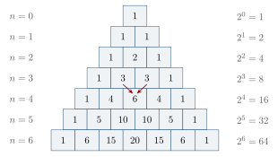

Chapter 8: Combinatorics, Prosody and Magic Squares¶
Some of the most original mathematics of ancient India arose not in astronomy but in the study of verse. Sanskrit metres are patterns of heavy and light syllables, and prosodists from Piṅgala onward asked how many patterns of a given length exist, how to list them all in order, how to find the pattern at a given place in the list, and how many contain a given number of light syllables. Their answers form a body of combinatorial techniques that was later extended to music, perfumery, medicine, the arrangement of numbers in squares, and finally, in the arithmetic of Bhāskara II and Nārāyaṇa Paṇḍita, to a general “net of numbers” (aṅkapāśa) (Plofker 2009; van Nooten 1993).
8.1 Piṅgala’s Chandaḥśāstra¶
8.1.1 The text¶
The Chandaḥśāstra of Piṅgala is the oldest surviving treatise on Sanskrit prosody that treats metres systematically, and it was counted among the auxiliary sciences of the Veda. Its date is uncertain; it is usually placed in the last centuries BCE, perhaps around the third or second century BCE. It consists of short sūtras in eight chapters. The combinatorial procedures appear at the end of the eighth chapter, in sūtras so brief that they are intelligible only with the help of commentaries, above all the Mṛtasañjīvanī of Halāyudha (10th century) (van Nooten 1993; Plofker 2009).
In classical Sanskrit verse each syllable is either heavy (guru, G) or light (laghu, L). A “syllabic” metre of \(n\) syllables per quarter is a sequence of \(n\) G’s and L’s. Piṅgala’s sūtras describe six procedures:
-
prastāra (“spreading out”): listing all patterns of \(n\) syllables in a standard order;
-
naṣṭa (“lost”): finding the pattern at a given position in the list;
-
uddiṣṭa (“indicated”): finding the position of a given pattern;
-
saṅkhyā (“number”): finding the total number of patterns;
-
lagakriyā (“operation with L and G”): finding how many patterns have a given number of light syllables;
-
adhvan (“extent”): finding the space needed to write out the list.
8.1.2 Listing the patterns¶
The prastāra begins with the pattern of all heavy syllables. Each following row is formed from the one above by a fixed rule: find the first G from the left and write L below it; copy the syllables to its right unchanged; and fill the places to its left with G. For \(n = 3\) this gives the eight rows
| 1 | 2 | 3 | 4 | 5 | 6 | 7 | 8 |
|---|---|---|---|---|---|---|---|
| GGG | LGG | GLG | LLG | GGL | LGL | GLL | LLL |
The two inverse problems have equally neat solutions.
Naṣṭa and uddiṣṭa: worked example for \(n = 4\)
Naṣṭa: which pattern is in row 11? Repeatedly halve the row number. If the number is even, write L and halve it; if it is odd, write G, add one, and halve it. Proceed from the first syllable:
Row 11 is GLGL.
Uddiṣṭa: in which row is GLGL? Write the numbers \(1, 2, 4, 8\) over the syllables in order. Add the numbers standing over the light syllables and add one: \(2 + 8 + 1 = 11\).
Continuing the listing confirms both answers: GGGG, LGGG, GLGG, LLGG, GGLG, LGLG, GLLG, LLLG, GGGL, LGGL, GLGL.
If L is read as the digit 1 and G as 0, and the pattern is read with its first syllable as the units place, each row of the prastāra is the binary representation of one less than its row number: GLGL is \(0101\) read backwards, that is \(1010_2 = 10\), in row 11. B. van Nooten drew attention to this correspondence in 1993 (van Nooten 1993). It is a modern reading of the procedures rather than something Piṅgala says: he had no binary numerals and did no binary arithmetic, and his purpose was to enumerate metres, not to represent numbers. Leibniz’s binary arithmetic (1703) was a different enterprise. The procedures are nonetheless a clear and early example of systematic enumeration, ranking and unranking of a combinatorial family.
8.1.3 Counting the patterns¶
The number of patterns of \(n\) syllables is \(2^n\). Piṅgala’s rule for computing it (8.28–31, as explained by the commentators) is a procedure for raising 2 to a power by repeated halving and squaring: if \(n\) is even, halve it and mark “square”; if it is odd, subtract one and mark “two”; continue until zero is reached; then, starting from 1, go back through the marks, doubling at each “two” and squaring at each “square”. For \(n = 6\):
then \(1 \xrightarrow{\times 2} 2 \xrightarrow{\ ^2\ } 4 \xrightarrow{\times 2} 8 \xrightarrow{\ ^2\ } 64 = 2^6\). This is the method now called exponentiation by repeated squaring.
8.1.4 The “Meru” of combinations¶
The number of patterns of \(n\) syllables containing exactly \(r\) light syllables is the binomial coefficient \(\binom{n}{r}\). A cryptic sūtra of Piṅgala (8.34) was explained by Halāyudha as describing a triangular figure, the meruprastāra (“the arrangement like Mount Meru”), built of cells in which each number is the sum of the two numbers above it (Figure 8.1). Counting the single 1 at the top as row 0, row \(n\) gives the numbers of patterns of \(n\) syllables with \(0, 1, \ldots, n\) light syllables, and its sum is \(2^n\).
Checking a row of the Meru: \(n = 4\)
The sixteen patterns of four syllables, grouped by the number of light syllables:
| L’s | Patterns |
|---|---|
| 0 | GGGG |
| 1 | LGGG, GLGG, GGLG, GGGL |
| 2 | LLGG, LGLG, LGGL, GLLG, GLGL, GGLL |
| 3 | LLLG, LLGL, LGLL, GLLL |
| 4 | LLLL |
The counts \(1, 4, 6, 4, 1\) are row 4 of the Meru, and they add up to \(16 = 2^4\).
Scholarly Note: Why the Meru gives the counts
A pattern of \(n\) syllables with \(r\) light syllables either begins with a heavy syllable, followed by a pattern of \(n-1\) syllables with \(r\) light ones, or begins with a light syllable, followed by a pattern of \(n-1\) syllables with \(r-1\) light ones. Hence the number \(C(n, r)\) of such patterns satisfies \(C(n, r) = C(n-1, r) + C(n-1, r-1)\), which is exactly the rule by which each entry of the Meru is the sum of the two above it. The same numbers appear as the coefficients in the expansion of \((a + b)^n\), since choosing \(a\) or \(b\) from each of \(n\) factors is like choosing a heavy or light syllable in each of \(n\) places.

The same triangle was described in the Islamic world (al-Karajī, c. 1000, and al-Samawʾal), in China (Jia Xian, 11th century, reported by Yang Hui in 1261) and in Europe (Blaise Pascal, 1654, among others). Halāyudha’s explanation is the earliest clear Indian statement of it; how much of it Piṅgala himself intended is uncertain (Plofker 2009; Singh 1985).
8.2 Combinations in Other Fields¶
Combinatorial counting soon spread beyond prosody.
-
Medicine. The medical compendium of Suśruta discusses the 63 possible combinations of the six tastes (rasa) taken one, two, three or more at a time.
-
Perfumery. Varāhamihira’s Bṛhatsaṃhitā (6th century), in its chapter on perfumes, counts the mixtures of four ingredients chosen from sixteen as \(\binom{16}{4} = 1820\), and arranges the quantities of ingredients in a \(4\times 4\) magic square (below).
-
Arithmetic. Mahāvīra (c. 850) states the general rule
\[\binom{n}{r} = \frac{n(n-1)\cdots(n-r+1)}{1\cdot 2\cdots r},\]and illustrates it with the tastes: \(6 + 15 + 20 + 15 + 6 + 1 = 63\) combinations in all, that is \(2^6 - 1\) (Rangācārya 1912).
8.2.1 Jain combinatorics¶
Jain canonical texts also count combinations. The Bhagavatī Sūtra enumerates the ways in which a number of entities can be distributed among categories—for example, philosophers among schools or souls among states of existence—taking them one, two, three and more at a time, and its commentators give the totals. In Jain logic, the doctrine of the “sevenfold predication” (saptabhaṅgī) rests on a simple count: from three basic predications about an object (it is, in some respect; it is not, in some respect; it is inexpressible, in some respect) one can form \(2^3 - 1 = 7\) non-empty combinations. Such counting by combinations was part of the intellectual culture in which Indian combinatorics developed (Datta 1929).
8.3 Moraic Metres and the “Fibonacci” Numbers¶
Not all Sanskrit and Prakrit metres are syllabic. In moraic metres (mātrāvṛtta) what is fixed is the total duration, counted in morae (mātrā), a light syllable counting one mora and a heavy syllable two. How many patterns of light and heavy syllables have a total length of \(n\) morae?
A pattern of \(n\) morae ends either with a light syllable, preceded by a pattern of \(n-1\) morae, or with a heavy syllable, preceded by a pattern of \(n-2\) morae. So if \(M_n\) is the number of patterns,
giving \(1, 2, 3, 5, 8, 13, 21, 34, 55, 89, \ldots\).
Patterns of four and five morae
With L \(= 1\) mora and G \(= 2\) morae:
4 morae (5 patterns): LLLL, GLL, LGL, LLG, GG.
5 morae (8 patterns): LLLLL, GLLL, LGLL, LLGL, LLLG, GGL, GLG, LGG.
The patterns of 5 morae are those of 4 morae followed by L (five of them) together with those of 3 morae (LLL, GL, LG) followed by G (three of them): \(8 = 5 + 3\).
The rule is stated by the Prakrit prosodist Virahāṅka (between the sixth and eighth centuries), by Gopāla in his commentary on Virahāṅka (c. 1135), and by the Jain polymath Hemacandra in his Chandonuśāsana (c. 1150) (Singh 1985).
In Europe the same sequence appears in Leonardo of Pisa’s Liber Abaci (1202), in a problem about the breeding of rabbits, and it has been called the Fibonacci sequence since the nineteenth century. The Indian and Italian occurrences arise from quite different problems, and there is no evidence of a connection. Parmanand Singh’s study of 1985 brought the Indian sources to wide attention (Singh 1985).
8.4 The Aṅkapāśa of Bhāskara II¶
The last chapter of the Līlāvatī is the “net of numbers” (aṅkapāśa), which treats permutations and combinations. Bhāskara II gives rules for:
-
the number of arrangements of \(n\) different things, \(n! = 1 \cdot 2 \cdots n\);
-
the number of arrangements when some of the things are alike, \(\dfrac{n!}{n_1!\,n_2!\cdots}\);
-
the sum of all the numbers that can be formed by arranging given digits;
-
the number of combinations of \(n\) things taken \(r\) at a time.
Problems from the Līlāvatī
Attributes of a god. How many different images of Viṣṇu can be made by exchanging the four emblems—mace, discus, lotus and conch—among his four hands? And of Śiva, with ten emblems in ten hands?
Answer. \(4! = 24\) and \(10! = 3{,}628{,}800\).
The palace windows. In a palace with eight windows, how many ways are there of letting in air by opening one, two, three or more windows?
Answer. \(\binom{8}{1} + \binom{8}{2} + \cdots + \binom{8}{8} = 8 + 28 + 56 + 70 + 56 + 28 + 8 + 1 = 255 = 2^8 - 1\).
The six tastes. How many dishes can be made from the six tastes taken one or more at a time?
Answer. \(63\).
Numbers from given digits. How many numbers can be formed with the eight digits 2, 3, 4, 5, 6, 7, 8, 9, each used once, and what is their sum?
Answer. There are \(8! = 40{,}320\) numbers. Each digit stands in each of the eight places in \(7! = 5040\) of them, so the sum is \(5040 \times (2 + 3 + \cdots + 9) \times 11{,}111{,}111 = 5040 \times 44 \times 11{,}111{,}111 = 2{,}463{,}999{,}975{,}360\).
The last example shows the kind of reasoning involved. Bhāskara’s rule for the sum of all the numbers formed from given digits counts how often each digit occupies each place, and multiplies by the “repunit” \(11\ldots 1\) to account for the place values—an argument by symmetry that is entirely general.
8.5 Nārāyaṇa Paṇḍita¶
The Gaṇitakaumudī of Nārāyaṇa Paṇḍita, completed in 1356, is the most advanced Indian treatise on combinatorics and magic squares. Its thirteenth chapter generalises the aṅkapāśa; its fourteenth, on “auspicious calculation” (bhadragaṇita), is devoted to magic squares (Plofker 2009; Datta and Singh 1992).
Among Nārāyaṇa’s results is a general treatment of additive sequences in which each term is the sum of a fixed number of preceding terms, generalising the moraic sequence. A well-known problem concerns a cow which produces a calf every year, each calf in turn producing a calf every year from its fourth year onward; the numbers of cattle in successive years satisfy \(a_n = a_{n-1} + a_{n-3}\), giving \(1, 1, 1, 2, 3, 4, 6, 9, 13, 19, 28, 41, \ldots\). In the same way, a sequence in which each term is the sum of the three preceding terms runs \(1, 1, 2, 4, 7, 13, 24, 44, 81, \ldots\), and Nārāyaṇa shows how such “additive series” count the ways of composing a number from parts of limited size. He also gives methods for listing the arrangements of digits with a given sum, for finding the arrangement at a given place in such lists, and for many related problems.
8.6 Magic Squares¶
A magic square of order \(n\) is an arrangement of the numbers \(1, 2, \ldots, n^2\) in a square so that every row, every column and both main diagonals have the same sum, \(n(n^2+1)/2\), which is 34 when \(n = 4\). Magic squares were known in China (the \(3\times 3\) Luo shu), in the Islamic world from the tenth century, and in India, where they had both mathematical and ritual uses (Datta and Singh 1992; Hayashi 1987).
8.6.1 Varāhamihira’s square¶
In the Bṛhatsaṃhitā (6th century), Varāhamihira gives a \(4\times 4\) arrangement of the numbers 1 to 8, each used twice, as quantities of the ingredients of perfumes. T. Hayashi showed in 1987 that, when the second occurrence of each number is increased by 8, the arrangement becomes a pandiagonal magic square of order four, that is, one in which the broken diagonals also have the magic sum (Hayashi 1987).
8.6.2 The Khajuraho square¶
An inscription in the Jain Pārśvanātha temple at Khajuraho (probably 10th–11th century) contains the square
\(\begin{array}{|c|c|c|c|} \hline 7 & 12 & 1 & 14\\ \hline 2 & 13 & 8 & 11\\ \hline 16 & 3 & 10 & 5\\ \hline 9 & 6 & 15 & 4\\ \hline \end{array}\)
Every row, column and main diagonal sums to 34; so does every broken diagonal (for example \(12 + 8 + 5 + 9\)), and so does every \(2 \times 2\) block, including those that “wrap around” the edges. Squares with these properties are now called “most-perfect”.
8.6.3 Nārāyaṇa’s methods¶
Nārāyaṇa gives several general methods: for squares of odd order, for squares whose order is a multiple of four, and for the remaining even orders, as well as methods for magic triangles, circles and other figures. For orders divisible by four, a simple and widely known construction (given here for illustration, not as Nārāyaṇa’s own procedure) writes the numbers \(1\) to \(n^2\) in order and replaces those on the two main diagonals by their complements (each \(a\) by \(n^2 + 1 - a\)). For \(n = 4\) this gives
\(\begin{array}{|c|c|c|c|} \hline 16 & 2 & 3 & 13\\ \hline 5 & 11 & 10 & 8\\ \hline 9 & 7 & 6 & 12\\ \hline 4 & 14 & 15 & 1\\ \hline \end{array}\)
whose rows, columns and main diagonals sum to 34, as do the four corner \(2 \times 2\) blocks and the central one. Unlike the Khajuraho square, it is not pandiagonal. Squares of this type were widely known; one appears, with two columns exchanged, in Albrecht Dürer’s engraving Melencolia I (1514). Nārāyaṇa also discusses how many squares of certain types exist and how to transform one into another. Several of his methods build a magic square by combining two auxiliary squares, one “covering” the other, in a way comparable to the later European use of orthogonal Latin squares (Datta and Singh 1992).
8.6.4 Squares of odd order¶
For squares of odd order a simple and widely known construction places the numbers \(1, 2, 3, \ldots\) in a diagonal path: start with 1 in the middle of the top row; move diagonally up and to the right, wrapping around the edges of the square; and when the next cell is already filled, move down one cell instead. In Europe this is called de la Loubère’s method (1693); versions of it are found in many traditions. For orders 3 and 5 it gives
\(\begin{array}{|c|c|c|} \hline 8 & 1 & 6\\ \hline 3 & 5 & 7\\ \hline 4 & 9 & 2\\ \hline \end{array} \qquad\qquad \begin{array}{|c|c|c|c|c|} \hline 17 & 24 & 1 & 8 & 15\\ \hline 23 & 5 & 7 & 14 & 16\\ \hline 4 & 6 & 13 & 20 & 22\\ \hline 10 & 12 & 19 & 21 & 3\\ \hline 11 & 18 & 25 & 2 & 9\\ \hline \end{array}\)
with magic sums 15 and 65. The \(3 \times 3\) square is the Chinese Luo shu in another orientation.
8.7 Combinatorics in Music¶
The combinatorial methods of prosody were applied to music. Śārṅgadeva’s Saṅgītaratnākara (c. 1240) enumerates the tānas, the orderings of the seven notes of the scale, of which there are \(7! = 5040\), and gives the procedures of listing, naṣṭa and uddiṣṭa for them, using a numerical table (the khaṇḍameru) to rank and unrank permutations. Rhythmic patterns (tāla) were enumerated in the same way as moraic metres.
Ranking permutations
The idea behind the khaṇḍameru can be explained in modern terms by the “factorial number system”. List the \(4! = 24\) arrangements of the symbols 1, 2, 3, 4 in dictionary order: 1234, 1243, 1324, …, 4321. To find the place of the arrangement 3142:
-
its first symbol, 3, is preceded by two unused symbols (1 and 2), each of which begins \(3! = 6\) arrangements: \(2 \times 6 = 12\);
-
its second symbol, 1, is preceded by no unused symbol: \(0 \times 2! = 0\);
-
its third symbol, 4, is preceded by one unused symbol (2): \(1 \times 1! = 1\);
-
the last symbol contributes nothing.
So \(12 + 0 + 1 = 13\) arrangements come before it, and 3142 is the 14th. Reversing the procedure finds the arrangement at a given place. A table of the multiples of \(0!, 1!, 2!, \ldots\)—which is what the khaṇḍameru provides, in its own arrangement and ordering—makes both operations a matter of looking up and adding numbers.
In the seventeenth century, Veṅkaṭamakhin’s scheme of 72 “parent” scales (melakarta) of Karnatak music was obtained combinatorially: two choices for the fourth degree, multiplied by six possible combinations each for the second and third and for the sixth and seventh degrees, gives \(2 \times 6 \times 6 = 72\). The names of the scales were later chosen so that their first two syllables encode their serial numbers in the kaṭapayādi notation (Chapter 1). Music is treated in Volume 9 of this series.
8.8 Pāṇini and Formal Rules¶
The grammar of Pāṇini (Aṣṭādhyāyī, c. 4th century BCE) is not a mathematical text, but its techniques are often mentioned in histories of mathematics. In about four thousand short rules, using an artificial metalanguage with marker letters, abbreviations for classes of sounds (pratyāhāra), conventions for the order in which rules apply, and recursive procedures, it generates the correct forms of Sanskrit words and sentences. Modern linguists and computer scientists have compared it to formal grammars; in 1967 P. Z. Ingerman even proposed that the notation used to describe programming languages be called “Pāṇini–Backus form” (Ingerman 1967). The comparison is apt as far as the formal character of the grammar goes. It does not support the popular claim, sometimes attributed to a 1985 article by Rick Briggs, that Sanskrit is uniquely suited to computers: Briggs discussed the semantic analysis of the later grammarians as a model for knowledge representation, not the use of Sanskrit as a programming language (Briggs 1985). Grammar and language are treated in Volume 10 of this series.
8.9 Assessment¶
Indian combinatorics grew from the practical needs of prosodists and was developed over more than fifteen centuries. Its achievements include systematic procedures for listing, ranking and unranking metres; the counting of patterns by powers of two; the triangle of binomial coefficients; the recurrence for moraic metres; the general rules for permutations and combinations; and a sophisticated theory of magic squares. What gives the subject its character is the continuity of the problems. The same questions—how many, which one is at this place, where is this one—were asked first of metres and then of tastes, perfumes, notes and the arrangements of digits, so that a technique devised for prosody could be carried to music by Śārṅgadeva or to arithmetic by Nārāyaṇa. Modern readers recognise in the results the binary representation of numbers, the binomial coefficients and the Fibonacci numbers, and the Indian forms of these structures were found independently, in their own problems. Much remains uncertain, above all how much of Halāyudha’s explanation was already intended by Piṅgala, and the later combinatorial literature on music and metre has been only partly studied (Plofker 2009; Singh 1985).
Exercises¶
-
Using Piṅgala’s naṣṭa, find the pattern in row 13 of the listing of four-syllable metres.
-
Using the uddiṣṭa, find the row of the pattern LLGL.
-
Compute \(2^{10}\) by Piṅgala’s halving-and-squaring procedure.
-
How many moraic patterns of 7 morae are there?
-
In how many ways can the digits 1, 1, 2, 2, 2 be arranged?
-
What is the sum of all the numbers formed by arranging the digits 1, 2, 3, 4?
-
Check that every row, column and diagonal of the \(3\times 3\) square in Section 8.6 sums to 15.
Answers. (1) \(13 \to\) G, 7 \(\to\) G, 4 \(\to\) L, 2 \(\to\) L: GGLL. (2) \(1 + 2 + 8 + 1 = 12\). (3) \(10 \to 5\) (square), \(5 \to 4\) (two), \(4 \to 2\) (square), \(2 \to 1\) (square), \(1 \to 0\) (two); then \(1 \to 2 \to 4 \to 16 \to 32 \to 1024\). (4) 21. (5) \(5!/(2!\,3!) = 10\). (6) \(3! \times 10 \times 1111 = 66{,}660\). (7) Rows \(8 + 1 + 6\), \(3 + 5 + 7\), \(4 + 9 + 2\); columns \(8 + 3 + 4\), \(1 + 5 + 9\), \(6 + 7 + 2\); diagonals \(8 + 5 + 2\) and \(6 + 5 + 4\): all equal 15.
Scholarly Note: Further reading
Van Nooten (1993) on Piṅgala’s procedures; Singh (1985) on the moraic sequence; Datta and Singh (1992) on magic squares, and Hayashi (1987) on Varāhamihira’s square; Plofker (2009), chapters 3 and 6 (van Nooten 1993; Singh 1985; Datta and Singh 1992; Hayashi 1987; Plofker 2009).